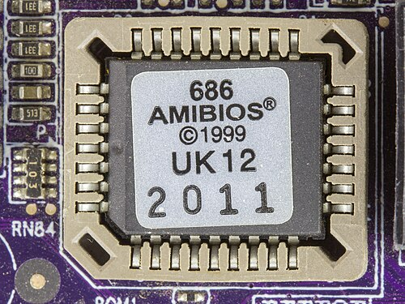
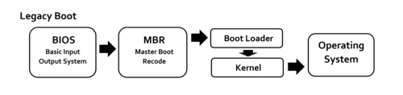

El sistema básico de entrada-salida o BIOS (del inglés Basic Input/Output System) es un estándar de facto que define la interfaz de firmware para computadoras IBM PC compatibles. También es conocido como BIOS del sistema, ROM BIOS y BIOS de PC. El nombre se originó en 1975, en el BIOS usado por el sistema operativo CP/M.
El firmware del BIOS es instalado dentro de la computadora personal (PC), y es el primer programa que se ejecuta cuando se enciende la computadora.
El propósito fundamental del BIOS es iniciar, y probar el hardware del sistema y cargar un gestor de arranque o un sistema operativo desde un dispositivo de almacenamiento de datos. Además, el BIOS provee una capa de abstracción para el hardware, por ejemplo, que consiste en una vía para que los programas de aplicaciones y los sistemas operativos interactúen con el teclado, el monitor y otros dispositivos de entrada/salida. Las variaciones que ocurren en el hardware del sistema quedan ocultas por el BIOS, ya que los programas usan servicios de BIOS en lugar de acceder directamente al hardware. Los sistemas operativos modernos ignoran la capa de abstracción provista por el BIOS y acceden al hardware directamente.
El BIOS del PC/XT de IBM original no tenía interfaz interactiva con el usuario. Los mensajes de error eran mostrados en la pantalla, o codificados por medio de una serie de sonidos. Las opciones en la PC y el XT se establecían por medio de interruptores y jumpers en la placa base y en las placas de los periféricos. Las modernas computadoras compatibles Wintel proveen una rutina de configuración, accesible al iniciar el sistema mediante una secuencia de teclas específica. El usuario puede configurar las opciones del sistema usando el teclado y el monitor.

Cuando se reinicia el procesador x86, se carga el contador de programa con una dirección fija en la parte superior del espacio de direccionamiento en modo real de 1 megabyte. La dirección de la memoria del BIOS está situado de tal manera que se ejecutará cuando el equipo se pone en marcha primero. Entonces, una instrucción de salto dirige el procesador para iniciar la ejecución de código en el BIOS. Si el sistema acaba de ser encendido o el botón de reinicio fue presionado (arranque en frío), se ejecuta completamente la autoprueba de encendido (POST). Si se inició Ctrl+Alt+Supr ("arranque en caliente"), se detecta un valor de indicador especial en la memoria no volátil (NVRAM) y la BIOS no ejecuta el POST. Esto ahorra un tiempo que es utilizado para detectar y probar toda la memoria. La NVRAM está en el reloj en tiempo real (RTC).
El indicador de pruebas de autodiagnóstico identifica e inicializa los dispositivos del sistema, como la CPU, la RAM, interruptores y controladores DMA y otras partes del chipset, tarjeta de vídeo, teclado, unidad de disco duro, unidad de disco óptico y otro hardware básico. La BIOS localiza el software gestor de arranque localizado en un dispositivo almacenamiento designado como dispositivo de arranque, tal como un disco duro, un disquete, CD o DVD, carga y ejecuta ese software, dándole el control del PC. Este proceso se conoce como arranque o secuencia de arranque.
La interfaz de firmware extensible unificada o UEFI (del inglés unified extensible firmware interface) es una especificación que define una interfaz entre el sistema operativo y el firmware. UEFI reemplaza la antigua interfaz del sistema básico de entrada y salida (BIOS) estándar presentado en los PC IBM como ROM BIOS de PC IBM.
La interfaz de firmware ampliable (del inglés extensible firmware interface) fue desarrollada inicialmente por Intel en 2002. La UEFI puede proporcionar menús gráficos adicionales e incluso proporcionar acceso remoto para la solución de problemas o mantenimiento.
La interfaz UEFI incluye bases de datos con información de la plataforma, inicio y tiempo de ejecución de los servicios disponibles listos para cargar el sistema operativo. UEFI destaca principalmente por:
La EFI hereda las nuevas características avanzadas del BIOS como ACPI (Interfaz Avanzada de Configuración y Energía) y el SMBIOS (Sistema de Gestión de BIOS), y se le pueden añadir muchas otras, ya que el entorno se ejecuta en 64 bits y no en 16 bits, como su predecesora.